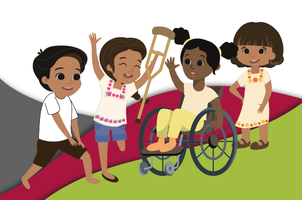

El Sistema Estatal de Información es una plataforma que permite conocer, consultar y descargar información estadística, cualitativa y cuantitativa; sobre niñas, niños y adolescentes en el estado de Quintana Roo.
Las cifras presentadas son recopiladas de plataformas de datos abiertos con el objetivo de mostrar un panorama estatal y municipal respecto de la garantía de los derechos de niñas, niños y adolescentes.
Con el objetivo de que la información sea de utilidad para Dependencias de la administración pública estatal, ayuntamientos, organizaciones, investigadores, ciudadanía, etc.
